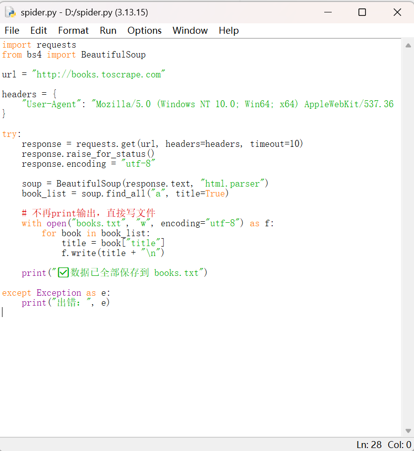
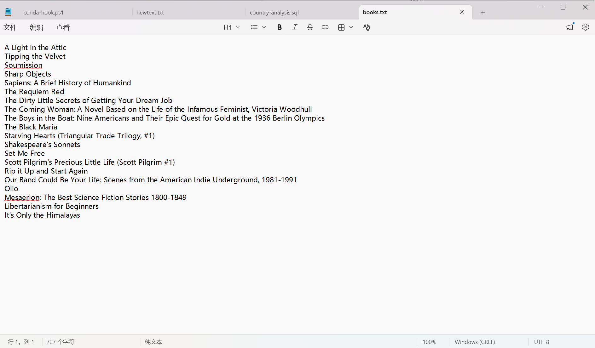

简单自我介绍：清华落榜生
本科就读于能源化学工程专业，对新技术充满兴趣。擅长借助AI工具完成静态网页搭建、页面排版美化。平时喜欢学习外语，阅读文学作品，研究网络与数码相关知识，做事细心，注重页面简洁实用，乐于完成各类网页定制小项目。
这是我搭建的本网站。使用 HTML + CSS，借助AI辅助完成开发，包含导航栏、个人介绍、技能、项目展示、联系模块，电脑手机都可以正常浏览。
项目描述：使用 Python + requests + BeautifulSoup 实现简单网页爬虫。针对练习测试网站抓取书籍名称，把爬取结果保存到本地txt文档。
技能点：网络请求、HTML解析、数据文件存储，学习遵守爬虫robots协议，仅用于公开测试网站学习用途。
import requests
from bs4 import BeautifulSoup
url = "http://books.toscrape.com"
headers = {
"User-Agent": "Mozilla/5.0 (Windows NT 10.0; Win64; x64) AppleWebKit/537.36 (KHTML, like Gecko) Chrome/120.0.0.0 Safari/537.36"
}
response = requests.get(url, headers=headers, timeout=10)
soup = BeautifulSoup(response.text, "html.parser")


🔗完整源码文件放在GitHub仓库
网页开发：HTML / CSS，AI辅助网页搭建与美化
语言：英语（六级590分），西班牙语具备日常读写能力
邮箱：2578460085@qq.com